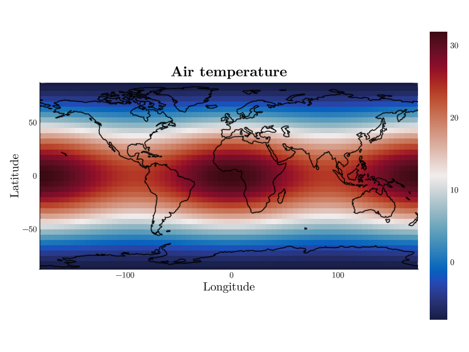
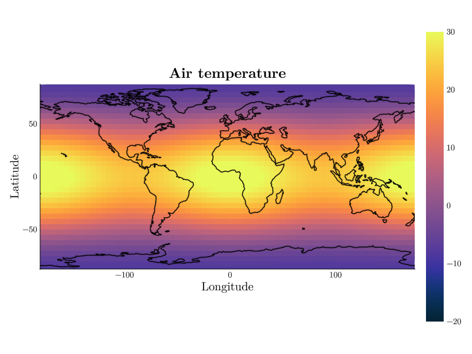
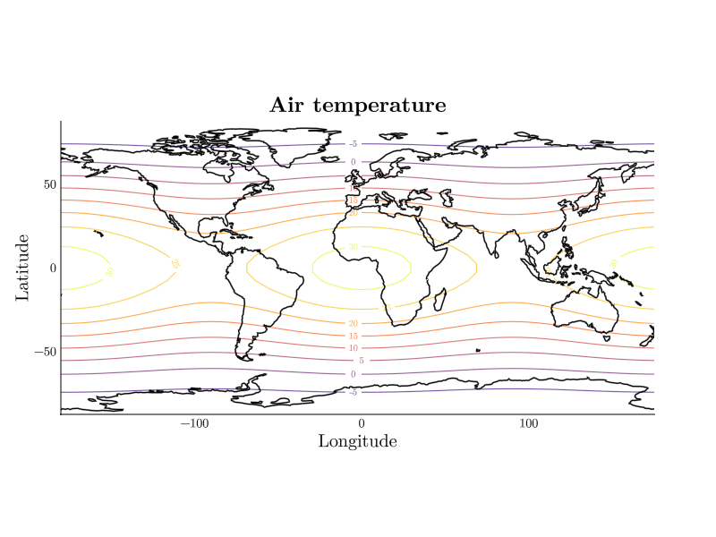
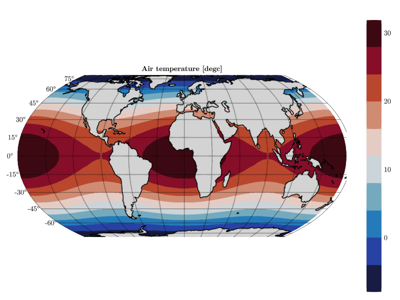
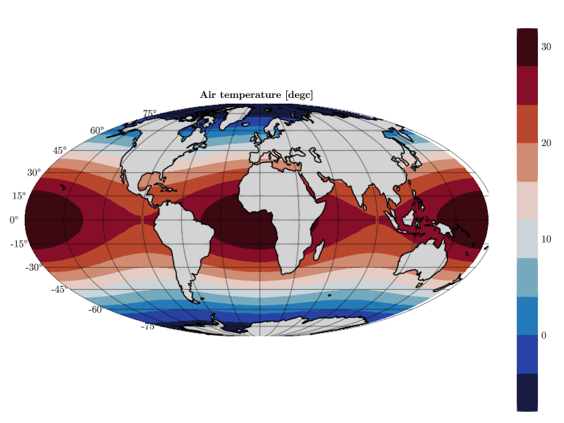

Customizing Plots
Almost every visual aspect of a plot can be changed at runtime with keyword arguments. Any input line containing key=value pairs — at the prompt or in the Plot Settings text box of the menu — is applied to the current plot:
CDFViewer> title="Air temperature", xlabel="Longitude", ylabel="Latitude"
┌ Info: Current plot settings:
│ title => "Air temperature"
│ xlabel => "Longitude"
└ ylabel => "Latitude"
Values are parsed as Julia expressions: :thermal is a symbol, (-20, 30) a tuple, "Air temperature" a string. Multiple pairs are separated by commas.
Where the keywords go
You never have to say what a keyword belongs to — CDFViewer routes each one automatically to the figure, the axis, the plot object, the colorbar, or the interpolation ranges, whichever accepts it. The kwargs command lists what is available, grouped by these categories:
CDFViewer> kwargs figure
CDFViewer> kwargs axis
CDFViewer> kwargs plot
CDFViewer> kwargs colorbar
CDFViewer> kwargs rangeSince the available keywords depend on the current plot type, the lists are long; try them in a running session (TAB completion works on keyword names, too).
Colormap and color range
colormap accepts any Makie colormap name, and colorrange pins the color scale — useful to compare different time steps on the same scale, or before recording an animation:
CDFViewer> colormap=:thermal, colorrange=(-20, 30)
┌ Info: Current plot settings:
│ title => "Air temperature"
│ xlabel => "Longitude"
│ ylabel => "Latitude"
│ colormap => :thermal
└ colorrange => (-20, 30)
The colorbar follows automatically. Deleting the keyword (del colorrange) returns to automatic scaling.
Contour levels and labels
Plot-specific keywords work the same way. A contour plot, for example, takes the levels to draw (a number or an explicit range) and can label them directly on the lines:
CDFViewer> p contour
[ Info: Selected: contour
CDFViewer> levels=-30:5:30, labels=true
┌ Info: Current plot settings:
│ title => "Air temperature"
│ xlabel => "Longitude"
│ ylabel => "Latitude"
│ colormap => :thermal
│ colorrange => (-20, 30)
│ levels => -30:5:30
└ labels => true
Inspecting and resetting
get shows the current value of a keyword, conf lists everything you have set, del removes keywords (restoring their defaults), and reset clears all customizations at once:
CDFViewer> get colormap
[ Info: colormap => :thermal
CDFViewer> conf
┌ Info: Current plot settings:
│ title => "Air temperature"
│ xlabel => "Longitude"
│ ylabel => "Latitude"
│ colormap => :thermal
│ colorrange => (-20, 30)
│ levels => -30:5:30
└ labels => true
CDFViewer> del labels levels
┌ Info: Current plot settings:
│ title => "Air temperature"
│ xlabel => "Longitude"
│ ylabel => "Latitude"
│ colormap => :thermal
└ colorrange => (-20, 30)
CDFViewer> reset
[ Info: Reset plot settings to default.Figure settings
A few special keywords control the figure itself rather than the plot:
| Keyword | Default | Effect |
|---|---|---|
figsize=(800, 600) | (800, 600) | size of the figure in pixels |
cbar=true | true | show or hide the colorbar |
moveable=true | true | allow drag-panning with the mouse |
geographic=false | false | draw on a geographic map projection |
proj="+proj=moll" | – | map projection (PROJ string) |
scale=110 | 110 | coastline resolution in m: 10, 50, or 110 |
coastlines=true | true | draw coastlines (geographic mode) |
land=false | false | fill land masses (geographic mode) |
earth=false | false | satellite image background (geographic mode) |
Geographic plots
For 2D fields on longitude/latitude axes, geographic=true switches the axis to a map projection — heatmap, contour, and contourf support it. The automatic longitude tick labels tend to bunch up at the curved map edge, so we hide them here with a regular axis keyword:
CDFViewer> geographic=true, land=true, xticklabelsvisible=false
┌ Info: Current plot settings:
│ geographic => true
│ land => true
└ xticklabelsvisible => false
The projection can be any PROJ string, for example a Mollweide projection:

Keyword arguments survive plot type switches where possible and can also be passed at startup with --kwargs='colormap=:viridis, ...' — see Command Line Options.